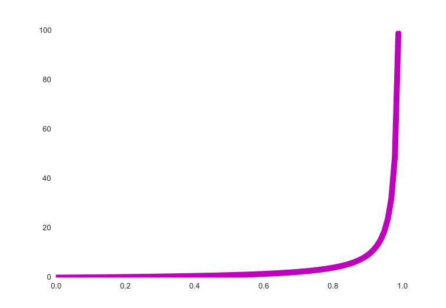

The Math of Reliability
Avishai Ish-Shalom (@nukemberg)
Notebook URL: http://fewbytes.com/reliability-notebook
Math!?
Example: Nagios alerts
Nagios service with max_check_attempts=4, check_interval=15sec
Service experiencing 40% error rate
Chance of hard CRITICAL: 2.6%
Chance of NOT GETTING ANY ALERT:
| 0.5 hour | 45.9% |
| 1 hour | 21.1% |
| 1.5 hours | 9.9% |
Define "Reliable"
- "4 nines"
- MTBF
- Failures per Year
- QoS
- SLA
Define "Failure"
System operating outside specified parameters
In reality: users are complaining!
"Failure" is subjective!
Possible states
- Working OK
- Failure
- Fuzzy
- Don't know
The absence of evidence
is not the evidence of absence
The absence of alerts
is not the evidence of working
Let's talk about failure

Statistical independence
The Hot Hand fallacy
The Gambler's fallacy
Past performance does not dictate future performance*
Reliability measures
- MTBF = mean time between failures (years per failure)
- λ = failures per year
- F = failure rate or probability of failure in year
- R = reliability rate (probability of working in year)
$$\lambda = T / MTFB$$
$$F = \lambda / T = 1 / MTBF$$
$$R = 1 - F$$
Serial reliability
$$R_{total} = \prod_{i=0}^{n} R_{i}$$
Serial reliability
| R1 | R2 | R3 | R system | Improvement (MTBF) |
|---|---|---|---|---|
| 0.995 | 0.99 | 0.95 | 0.936 | - |
| 0.9995 | 0.99 | 0.95 | 0.94 | X 1.07 |
| 0.995 | 0.999 | 0.95 | 0.944 | X 1.15 |
| 0.995 | 0.99 | 0.995 | 0.98 | X 3.21 |
$$R_{total} \lt min(R_{i})$$
Best ROI - improve the worst component
Improvement is expensive
Parallel reliability (redundancy)
Reliability of redundant system, up to $k$ failures
$$R_{total}(n, k) = \sum_{i=0}^{k} {n \choose i} F^{i} R^{n-i}$$
Redundant system, R=0.95
| n | k | Overhead | R total |
|---|---|---|---|
| 10 | 1 | 10% | 0.914 |
| 10 | 2 | 20% | 0.989 |
| 100 | 5 | 5% | 0.616 |
| 100 | 9 | 9% | 0.972 |
| 100 | 11 | 11% | 0.996 |
- Not enough redundancy will REDUCE your reliability
- N+1 rule only true for small clusters
- Large clusters more cost effective
Statistically dependent /
Correlated failures
- Shared workload
- Shared code
- Shared infrastracture
Backup and operational sub-systems should avoid coupling with primaries
The police have breathalyzers displaying false drunkenness in 5% of the cases in which the driver is sober. However, the breathalyzers never fail to detect a truly drunk person. One in a thousand drivers are driving drunk
A driver is stopped at random and the breathalyzer shows "drunk" result. We assume you don't know anything else about him/her. What is the probability he/she really is drunk?
If you answered 0.95, you are prone to the
The Base rate fallacy
Correct answer: ~ 0.02
Explanation
In a 1000 drivers sample, 1 would be drunk and 49.95 (999 x 0.95) would falsely test as drunk
The base rate of being detected as drunk (P(D)=50.95/1000) is much higher than the rate of drunk drivers (P(drunk)=1/1000)
Bayes theorem: $P(drunk|D) = P(D|drunk) P(drunk)/P(D)$
$P(D|drunk) = 1, P(drunk)=1/1000, P(D) = 50.95/1000$
Active/Standby failover
- Failed master always detected
- 2% probability of false positive (working master detected as failed)
- ~ 95% of failovers are erroneous
- Erroneous failovers can cause severe issues
Disable auto failover, greatly reduce false positives or use active/active
Multiple dependencies
Circuit breakers!!
Queuing delay
$delay \propto \frac {\rho} {1 - \rho}$
ρ - system utilization
Throttle your system!
Backpressure
Little's Law
$L = \lambda W$
L - clients in the system, λ - arrival rate, W - wait time (latency)
$L_i = L_j \rightarrow \frac {\lambda_i} {\lambda_j} = \frac {W_j} {W_i}$
Feedback loops
$\frac {df} {dt} = \alpha f \rightarrow f(t) = A e^{\alpha t}$
Backoffs, cooldowns
Takeaways
- Math is important
- ROI
- Redundancy
- Overcapacity
- Segmentation & compartmentalization
- Load shedding, backoffs, cooldowns
- Throttling, Backpressure